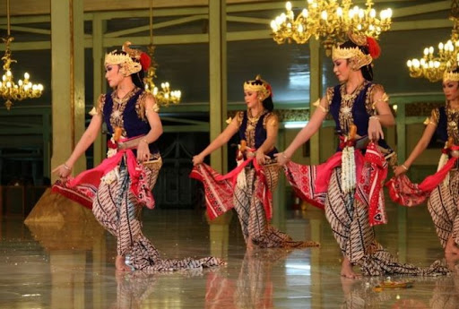
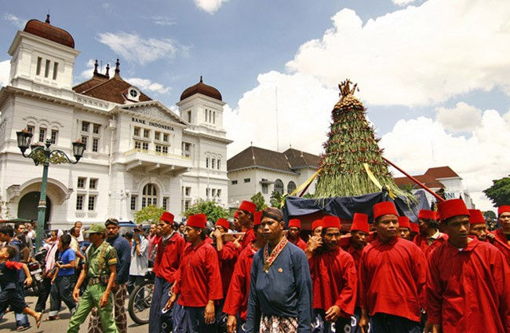

Tari Serimpi adalah salah satu tarian klasik dari Jawa Tengah yang memiliki gerakan anggun dan lemah gemulai. Tarian ini biasanya ditampilkan di keraton dan memiliki makna filosofis yang dalam.
Kebudayaan Jawa Tengah
Informasi tentang kebudayaan yang mencakup tarian tradisional, upacara adat jawa tengah
Tarian Tradisional Jawa Tengah

Upacara Adat Jawa Tengah

Upacara Sekaten adalah tradisi yang diadakan di Yogyakarta dan Surakarta untuk memperingati Maulid Nabi Muhammad SAW. Upacara ini melibatkan berbagai kegiatan budaya dan musik gamelan yang khas.